那啥在哪 whereis
回忆上次内容 😌
- 上次讲了ls的细节
- 参数 (arguement)
- 选项 (option)
- 如果我想要对
/proc 执行 ls 操作
- 这个应该怎么写呢？🤔
- 大家可以自己试试～
- 你忘记了吗？！！😱
进程列表
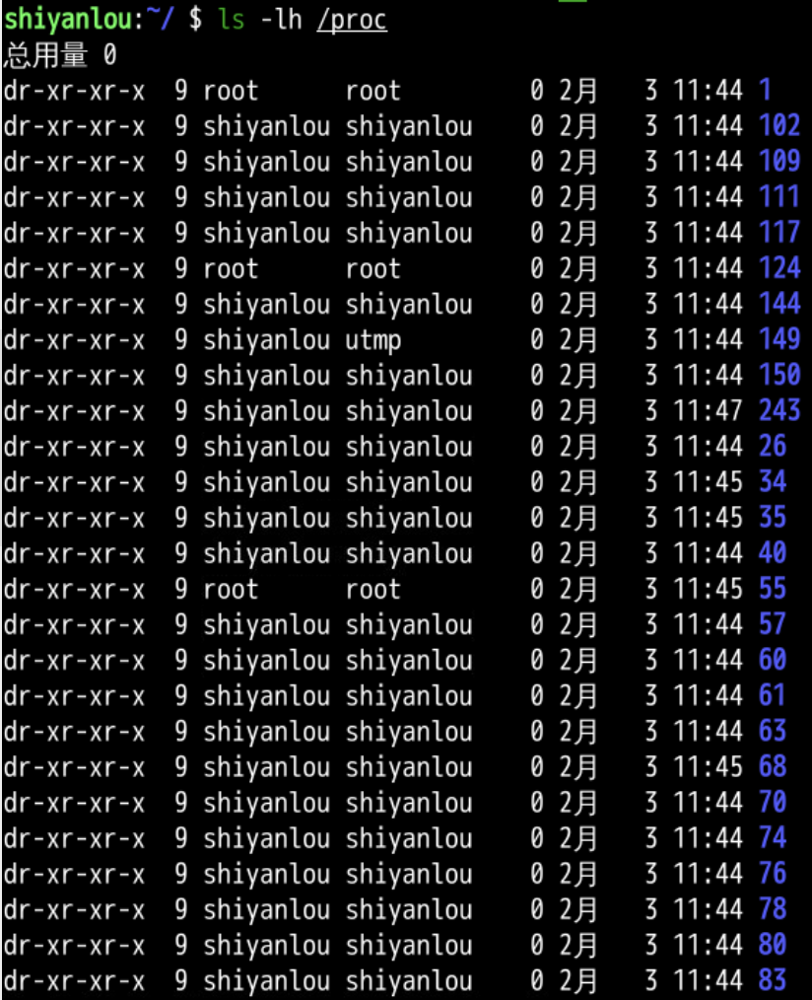
ls 在哪？🤔
/bin/ls
/usr/share/man/man1/ls.1.gz
- 难道说我们最常用的一个命令
- 竟然是文件系统中的一个文件？
- 为什么 ls 在硬盘里？🤔
位置
- 我们复盘整个过程
ls 文件最开始在 /bin 这个位置- 当我在命令行敲击之后
ls 回车之后
- 操作系统要求运行
ls 程序
- 操作系统分配内存空间给
ls
- 操作系统把
ls 从硬盘加载到内存中
- 操作系统分配 cpu 资源去执行程序
- 最终把
ls 的结果输出到标准输出流（屏幕）上
- 为什么 ls 命令对应两个位置呢 🤔
位置
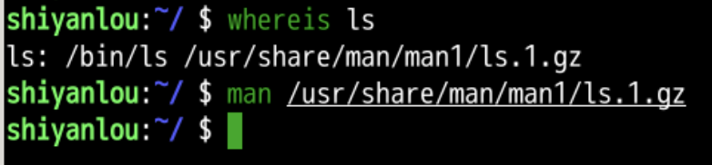
搜索打开gz
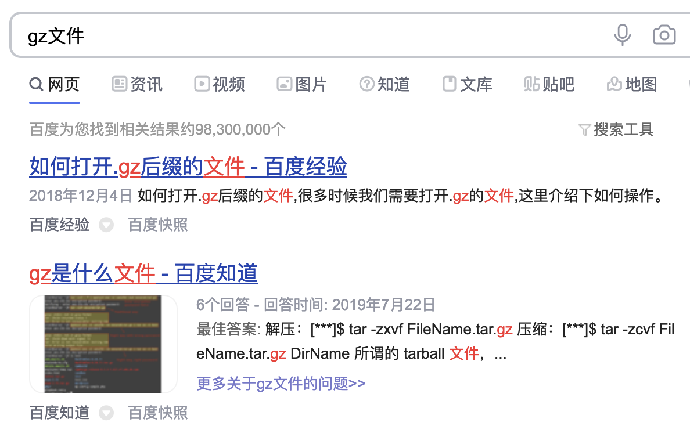
尝试
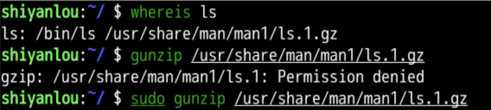
- sudo是
- superuser do
- 用管理员的权限运行命令
- 允许已验证的用户以其他用户的身份来运行命令
- 其他用户可以是普通用户或者超级用户
- 大部分时候我们用它来以提升的权限来运行命令
- 这样就可以执行解压程序
- 然后去目录底下找到cat一下
直接打开
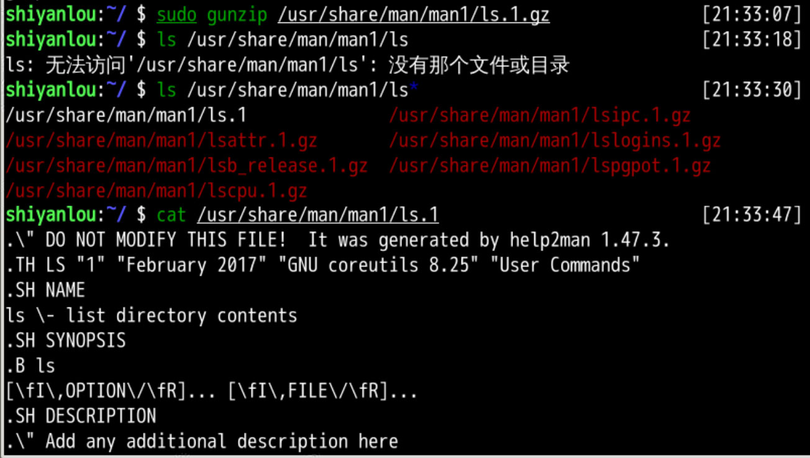
- 这和man ls有什么关系呢？
- 这些都是一回事
- man /usr/share/man/man1/ls.1.gz
- man ls
- cat /usr/share/man/man1/ls.1
- 那个简单些？
- man ls更简单一些
- 其实man ls就是解压并输出ls的帮助文件
- 怎么理解whereis呢？
whatis
- whereis 可以帮我们定位命令的位置
- 但是 whereis 描述太简单了
- 我们可以查询 whereis 的手册 man：📕
man
我们可以查询到 whereis 的具体内容：📕
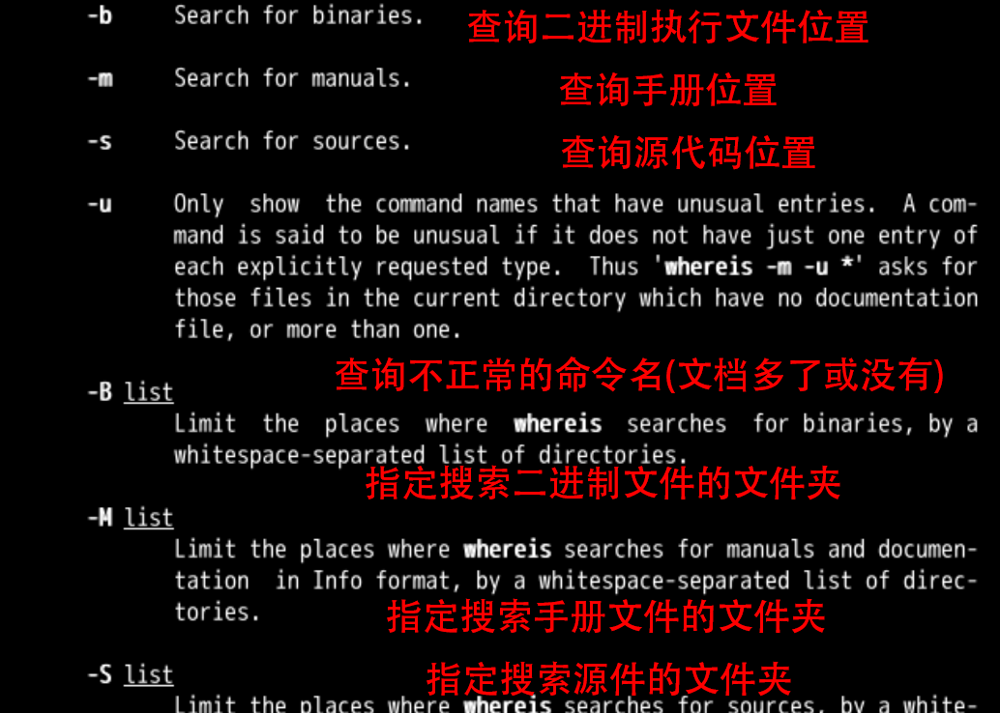
二进制(-b)
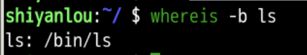
文档(-m)
-
m 的意思是 manual 文档
- 查找 whereis 的文档
- 文档在/usr/share/man 里面
-
总结来说
whereis -b ls
whereis -m ls
- 这系统不是开源的么
- 那 ls 的源文件在哪呢？
先查找 ls 的源文件
- dpkg -S /bin/ls
- dpkg 是 Debian Package 是 Debian 的包管理命令
- 包管理命令是管理各种应用软件包的
- 可以理解为添加删除程序
- -S 是在已经安装的包里面查找 search
- /bin/ls 是具体文件的位置
- 得到结果是 coreutils
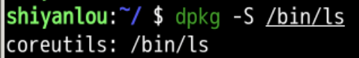
设置源
- 要找到coreutil
- 需要从apt的源上找
- 什么是apt呢？
- apt 是Linux下的一款安装包管理工具
- 是一个客户/服务器系统
- apt-get是用来安装linux下的各种工具包的
- 就像一个应用商店
sudo vi /etc/apt/sources.list
分步操作
- 打开源的apt配置文件
- apt 是高级包管理的命令
- sudo 是使用管理员权限
- vi 是文本编辑器
/etc/apt/sources.list 是源的配置文件- 目前的光标在第一行
- 依次输入 4G
- 移动光标直接到第四行
- 光标在行首
- 黄色、绿色的部分 是 设置好的源
- 粽红色的部分 前面有井号
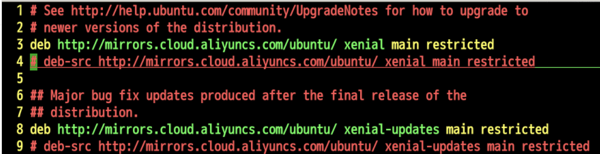
取消注释
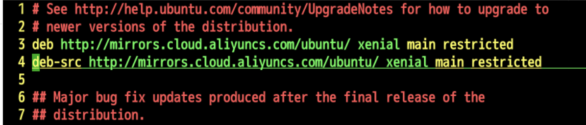
- 输入2个 x
- 确认deb-src源的位置
- 这样我们不但可以下载包
- 还可以下载包的源文件(source)
- 到底是谁的源文件？
- 所有可执行程序的源程序都可以下载
- 这就是所谓的开放源代码，开源
- 从哪里下载
- 从mirror镜像
- 比如阿里源就是mirrors.cloud.aliyuncs.com下载
- 依次摁下
用 apt 下载源代码
#运行 `sudo apt update`（更新源）
sudo apt update
#获得源代码，注意结尾有s
sudo apt source coreutils
#在当前文件夹下找到 `coreutilsXXX` 文件夹
ls coreutils*
#8.25是对应的软件包的版本号
#可能和您对应的不一样
#cd 进入这个文件夹
cd coreutils-8.25
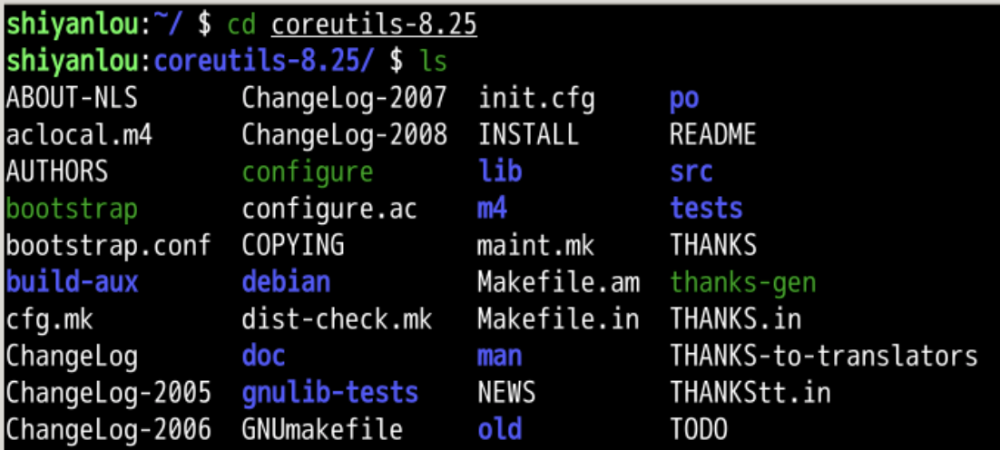
找
#查看一下 coreutils-8.25 下有什么
ls
#进入 `src` 源文件文件夹 (source)
cd src
#查看一下 src 下有什么
ls
#再次文件夹查找ls的文件
#找到了 `ls.c` 文件 (ls 的 c 语言源文件）
#ls ls.*
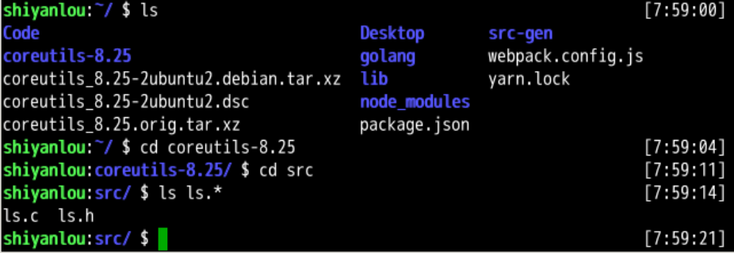
查看
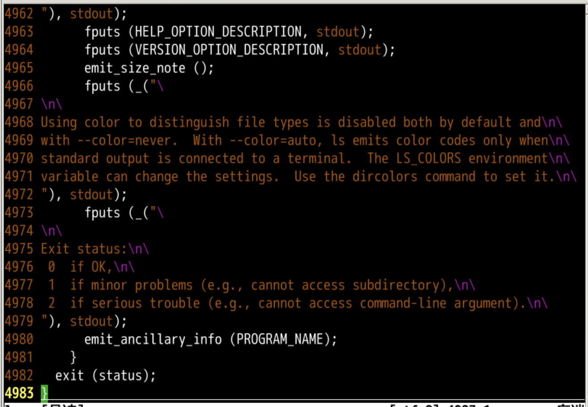
总结思考 🤔
- 这次了解了where
- 命令有三种位置
- 二进制代码 binary
- 源代码 source
- 帮助手册 manual
- 我们真的可以获得 ls 源代码
- 可是如果有多个版本的命令比如：
- 又比如java有很多版本
- 我们下次再说。 👋